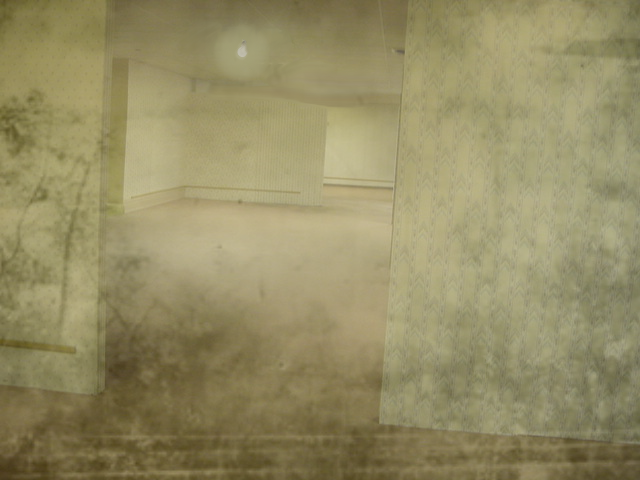

早期電氣區

Level 0.7 的图像，摄于 1925 年（色彩为后期添加）
Level 0.7 的这一区段因其使用灯泡与蜡烛照明、以及异常缺乏电源插座而极易辨认。该层级是 1800 年至 1949 年间 Level 0 的存档，其与现代的 Level 0 差异足够显著，以至于多数人正是在此处意识到自己已离开常规的 Level 0。这很可能是因为房间变得更加昏暗，且照明灯具与常规版本截然不同。
Level 0.7 的这一部分比前一区段危险得多。蜡烛与白炽灯泡使得该区域一旦受到扰动，便极易成为火灾的源头7。此外，略显华丽的壁纸所使用的涂料经研究证明若摄入具有毒性，其性质类似于铅。该区域虽外观开始显著变化，但仍保留着 Level 0 的诸多特性。Level 0 臭名昭著的孤立效应依然存在，尽管随着流浪者向此区段深处探索，其影响会逐渐减弱。
流浪者向此区段探索得越深，灯泡的数量就越少，逐渐被蜡烛取代。与此同时，壁纸也会发生细微变化，变得更加华丽。若此现象开始出现，建议流浪者不要继续前行，除非已为前方的旅途做好了充分准备。